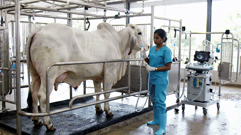

Arquitectura Genética y Reproductiva
Infografía Integral Bos Indicus
Mapa de procesos para evaluación de DEPs, protocolos IATF y biotecnología celular (OPU-FIV). Haga clic sobre la imagen para ampliar.

Optimice los parámetros reproductivos y genéticos en ganadería cebuina (Brahman, Nelore, Gyr, Guzerá). Implemente biotecnologías avanzadas (IATF, OPU-FIV) y criterios de selección por DEPs en el trópico bajo e intermedio.
Diámetro Folículo Dominante
Intervalo Colecta OPU
Eficiencia Biotecnológica

Adaptación bioclimática superior, rusticidad y potencial de selección genómica para carne y leche en condiciones tropicales.
Línea de carne de alta eficiencia metabólica, excelente habilidad materna y alta densidad folicular antral para programas OPU/FIV.
Estándar global para capacidad de crecimiento, rendimiento en canal (AOL) y heterosis en cruzamientos industrializados.
Especialización láctea en el trópico. Evaluación por PTA/DEP de leche (kg/lactancia), persistencia de curva y conformación de ubre.
Raza de doble propósito por excelencia. Notable fortaleza esquelética, fertilidad bajo estrés hídrico y longeva vida útil.
Mapa de procesos para evaluación de DEPs, protocolos IATF y biotecnología celular (OPU-FIV). Haga clic sobre la imagen para ampliar.
Ajuste de tiempos y dosis hormonales para la fisiología endocrina cebuina.
Sincronización ajustada para folículos dominantes de 10-12 mm en vacas/novillas Bos indicus.
Aprovechamiento de la alta reserva de folículos antrales primordiales en razas cebuinas.
Consulte los lineamientos estructurados en la Skill profesional (habilidad_mejoramiento_gen_tico_bos_indicus.md) para toma de decisiones zootécnicas y veterinarias.